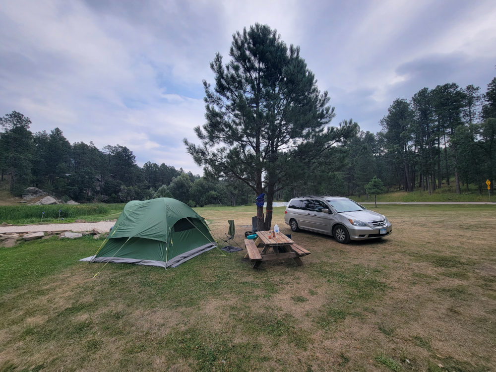
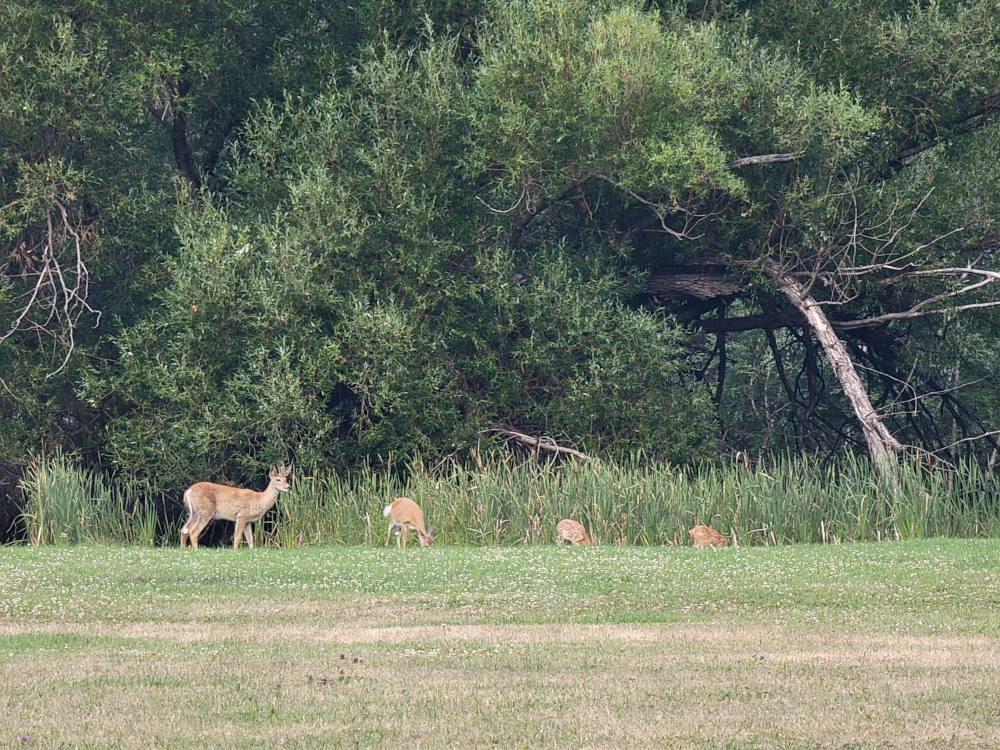
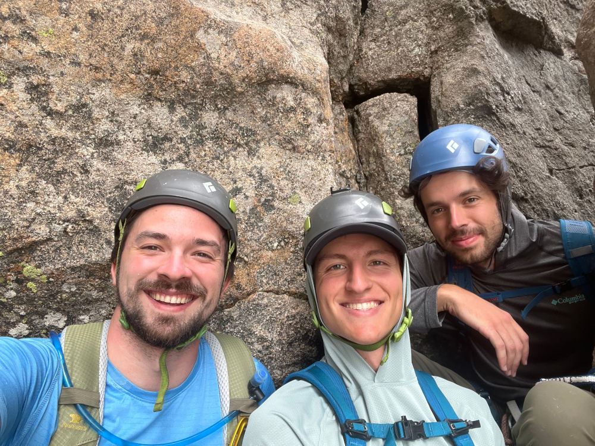
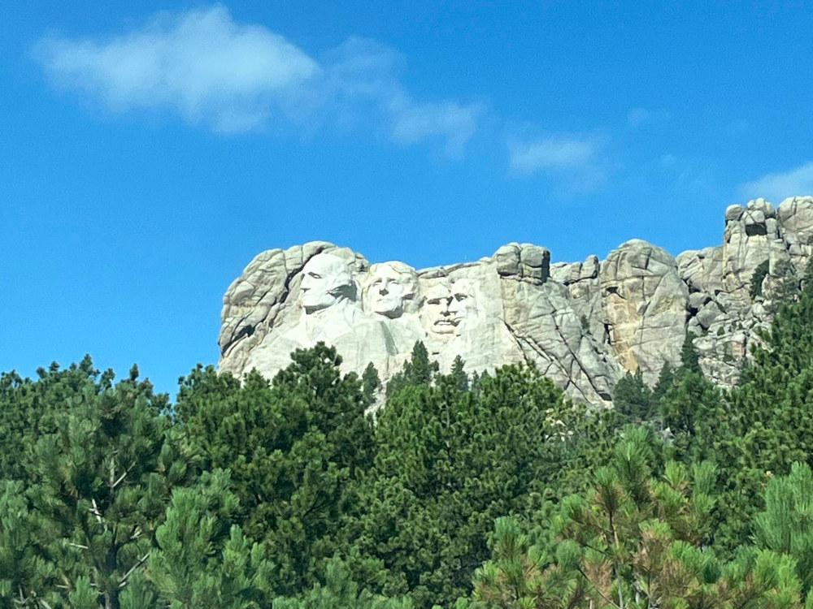

DAY 1 (03 AUG):
At 8:00 am, Noah, Jon, and I piled into the minivan, the same minivan that I rode in the back of for many long road trips as a kid. I probably sounded like a dad as I reminisced and raved to my friends about how superior of a vehicle it is. Unlimited space, comfy seats, an aux port, and maximum reliability. What more do you need? Kudos to the Honda engineers who designed this thing; the 2008 Odyssey is a beast.
After a couple hours, we stopped at McDonalds for some McGriddles. If you haven’t had a McGriddle before, you’re missing out. It’s an egg McMuffin but instead of the muffin it has syrup infused pancakes. YUM!
We were excited and chatty, so the drive didn’t feel too long, and at around 5:00 pm we pulled into
Timber Ridge Campground. The campground was meh but it worked. It was basically just a field with picnic tables and thin sheet metal fire rings scattered around. The other occupants were a bunch of deer and a bunch of Sturgis motorcyclists.


For dinner we headed over to Keystone and found this place called Halley’s West, which had pretty good burgers and fries.

DAY 2:
VRRROOOMMM POP POP POPPOP POP POPPPOP POP… I guess motorcyclists are morning people. We sat up in our sleeping bags at 7:00 am and looked at each other groggily, realizing that this would be our alarm for the next week. The night owl in me was annoyed but I guess I should be thankful that they got us up to make use of the daylight. A cloud engulfed us, and I donned my rain jacket and watched the water droplets curiously as they floated in the gentle breeze, seemingly massless and without predictable trajectory. Depth was greatly exaggerated by the fog, giving objects at a certain distance a sort of ominous importance. I kept looking at this tree that somehow looked like it was both infinitely far away and within reach at the same time.

Bagels and Nutella for breakfast, and then we were off to our first climbing spot,
1880 Wall East. We hit the jackpot with this one. It was a two minute walk from the pulloff, very densely bolted, and full of easy routes. A perfect place to get used to the Black Hills geology and gain some confidence on lead. We cruised through
Choo Choo,
Chuga Chuga, and
Golden Spike
in the morning. Why the train theme for the route names? The reason became apparent while Jon was yelling down to me from the top. “Alright Sam, you can take me-TOOOOOOOOOT-pause-you can take me off-TOOOOOOOOOOOOOOOT!” There was a tourist train that ran right alongside the crag, and that thing’s horn was louder than a freight train. It was a cool little vintage steam train though, billowing white smoke as it rolled through.


After lunch, I set my sights on a trad route called
All Aboard
at the nextdoor crag,
1880 Wall West. It looked long and varied and fun. Despite still not having many trad onsights under my belt, I felt more confident than I’ve ever felt so far when stepping off the ground for a lead, which was super cool.
I racked up and set off, up a crack in the corner of a dihedral. Easy but quite flowy and fun. After 40ft or so, the crack widened as the right side of the dihedral separated from the wall and became a pillar. I slung a chockstone at the top and mantled atop the pillar in my characteristic "beached whale" style. Someday I’ll be graceful at mantling…

Atop the pillar, I leaned with my palms against the wall, rested, and scanned the next section. The hand and foot holds were fairly obvious and I could visualize a possible movement between them, but a lack of features for gear had me a bit unnerved. All I could see was a thin horizontal seem at waist height with only a few cm of open length. Oh come on mother nature… Really? That’s all I get? I laughed nervously and looked around more thoroughly, but nothing else appeared. Alright. Cool. It’s cool. I can work with this. I took my #1 DMM Dragonfly
off my harness and slotted it into the seam. I felt some relief as I found that it fit absolutely perfectly, but the smallest cam on the market can only instill so much confidence. The thing is TINY. But I tried to listen to the logical part of my brain and keep my cool. It’s rated to 6kN Sam, it’ll catch you… and if it doesn’t… I quickly ran through the FMEA[1] in my head. What happens if I fall and this piece rips? I leaned over the pillar, visualizing the fall I would take. Not too bad. Worst case a broken ankle or something if I hit that inclined slab awkwardly. What’s the likelihood of the piece ripping? Probably low, the rock is good quality and the placement is perfect. What’s the likelihood of me falling? I looked at the next sequence again and felt a surge of confidence. Near zero.
I set off again, executing the moves almost exactly as I had visualized them, and in no time I’d made it 15ft up to the next piece of protection, a lovely shiny bolt. I clipped it, laid my cheek against the rock, and reflected while resting. Heck yeah! I just did that without getting scared. It’s the little moments like these that mark progress as a trad climber.
I continued up an unmemorable face for a while until my flow was interrupted by some unfortunate news from Jon. “Uh, Sam, you just passed the halfway mark on the rope.” Goddammit! My pride for how the route was going so far turned to shame. What a gumby[2] move! In my excitement at the base, I’d forgotten to check how tall the route was and think about the descent. The halfway mark passing Jon meant that the 60m rope we were using wasn’t going to be long enough to get me back to the ground. I finished a sequence and sat on a sloping ledge to think. The safest option would be to finish the route, fix the rope to the anchor, rappel on one strand, go get the longer rope from the car, ascend again, and then clean the anchor and lower… but I was tired and that sounded like way too much work, so I kept thinking and eventually came up with a lazier option. I could have Noah grab the second rope from the car and tie it to the end of the one I was using, and then I could haul it up and rappel. I shouted the idea to my friends only for them to quickly point out a flaw. I had the keys in my bag 80ft up the wall.
I leaned over the ledge to assess potential flight paths for the keys if I were to throw them down. Three trees and the road nicely framed an open area where I could land them. Oh, I can hit that gap EASILY I thought. I mean come on, I was an all star little league pitcher after all. I didn’t want the keys to get lost in the brush, so I tied them to a neon sling. Stupid choice. Shoulda used a hex or something. You’ll see why. I told my friends to prepare for the airdrop, did a couple practice throwing motions, and then let it fly.
The trajectory was looking great… until the sling snagged onto the very tip of the one little dead branch protruding out over the landing zone. I groaned. Oh noooooo. Stupid, stupid, stupid. Dangit Sam! Why did you choose the lazy option. Now we had two problems. I was still stuck on the route, and now the keys were stuck in a tree 30ft off the ground. I couldn’t help but laugh.

After another round of brainstorming, I finished climbing the route and then Jon and I assessed whether I could make the descent with the short rope. The anchors were closer than I had realized and Jon figured he could climb up the initial 4th class section to provide some extra length, so we decided to go for it with the short rope. It turned out to be totally fine. We had also forgotten that ropes stretch like 10%, so I made it down easily.
One problem solved, one to go. The whole time I was finishing the route and lowering, Noah was hurling sticks at the branch trying to knock the keys loose. He got so close a couple times! He even walked a ways to find a massive branch, but it was too short. The passersby were probably wondering what in the world was going on as he casually carried a 20ft branch along the shoulder of the road. But with me down, the key problem just got a lot easier since now we had a rope to use. I tied one end to a rock, found some solid ground to stand on, and started whirling it around. Noah stood in the ditch and let me know when the road was clear. As pissed off as we were at the noisy motorcyclists, I didn’t exactly want to obliterate one of them with a rock on a string. After a few attempts, I got the rope over the branch. As a kid, I remember we had a chunk of wood on a string that we used to throw into the trees to get toys down. Little did I know at the time, I was practicing for this moment. Jon tugged on the rope and shook the keys loose. Our mini epic was over!

With that, we packed up and headed back to camp. It felt like a very successful day for us, with a fun to faff ratio better than our usual.
Days feel very long when you aren’t distracted by technology, and you can only climb for so much of the day before you are wiped, so we were left with lots of extra free time in the evenings. On this night, we spent a good chunk of time cruising through
one of those “get to know you on a deeper level” card games. It was fun.
Showers get a 3/10. 1 point for warm water, 1 point for high flow rate, and 1 point for having hooks on the wall. Much better than no showers, I guess. But I would look for a different campground if we were to do this trip again.
DAY 3:
We decided to pace ourselves and take it easy this day as it was quite hot. A run to town for groceries and a thorough review of the guidebook ate up a good chunk of time. Then we mosied back to the same crag and ticked off a couple more easy sport routes,
The Engineer
and
Gandy Dancer. Nothing too memorable but they were fun!
No climbing trip would be complete without meeting some old local legend. They always share the same vibe; weathered, wise, and excitedly friendly. This one’s name was Mark. As we climbed, we watched him bolting a new line next to us. You could tell he was totally in the flow as he quickly moved up and down his fixed line, acting out sequences of moves while dangling in the air and then muttering to himself about where to put the bolts. It was cool to be reminded of how artistic and personal the process is. Developers have a lot of control over the way a sport route feels. They could place many bolts with little space between, making the route flowy and fun. Or they could leave lots of space between bolts, making the route intimidating and puzzling, but arguably more memorable, albeit also more dangerous. I respect that whole spectrum, but definitely prefer the safer style, which is what Mark was clearly going for. When he finished installing the hardware, I asked if he wanted a belay to claim the first ascent. He was appreciative but declined as he still needed to clean all the dirt and weeds out. We chatted for a bit and he excitedly told us about some other new routes at a neighboring crag to check out.
Spaghetti and sun chips for dinner. We were lazy and didn’t want to have to clean a saucy pot, so Noah just set the jar in the sunny field for a while to warm it up. It didn’t work at all haha. Here's him running to retrieve it.

The motorcyclists were chain smoking and playing music for the whole campground to hear. We were fed up, and began mocking them by putting our hands up in the air as if holding handlebars, saying “Truuuuuump 2024”, and then making a farting noise while staring blankly into the distance. This became a recurring act for the rest of the trip whenever we got annoyed by them. We didn’t do it in front of anyone, just to ourselves.
The evening was passed by reading. Noah and Jon were reading the first and second books of The Three Body Problem series by Cixin Liu, and I was reading Constance Wu’s autobiography, Making a Scene. I didn’t relate to her story at all, but still enjoyed reading it. It had a level of rawness that was really special.

DAY 4:
The next day, we headed to a different area called the
South Seas
where we were hoping to get on a multipitch or two. But little did we know, we were about to get our butts whooped and our egos evaporated.
Jon kicked things off by leading this sport route called
Surging Wave, which was nestled in between a couple formations. As I belayed, I could tell from his body language and expressions that it was a bit of a battle both physically and mentally. I was nervous the whole time, and I wasn’t even the one climbing! On top rope, the climb was actually pretty fun, but as I climbed I envisioned leading it and totally understood why Jon was a bit spooked. Lot’s of slopey pinches, smeared feet, and weird body positioning made it difficult to tell if you were in control or just about to pop off, and if you were to pop off there were a plethora of features jutting out that you’d likely bounce off of.

Once off the route, we had a little group therapy session about risk in climbing. I’m so grateful to have climbing partners who have similar risk tolerance.
While wandering around for a while waiting for the psyche to build back up, we found a good route for Noah to do his first outdoor sport lead.
Life Vest Made of Lead. He crushed it! Clearly ready for bigger, better routes. Go Noah!

I get to say that I did my first free solo to get to the top to take some photos, although the route I climbed was so easy I can’t believe someone bothered to bolt it.
Up the Creek, more like “Up the Staircase”.
Next, I tried to lead this supposedly easy slab called
Stormy Night, but completely chickened out when the crimps disappeared and were replaced with slopers. I just kept thinking I’d really like to play some tennis when I get home. Can’t do that without legs. Sooo, I taped a draw to a long stick and cheated my way up the rest of the route. Noah and Jon top roped it and I think enjoyed it.

DAY 5:
Thankfully, the next day we took a couple big steps forward. We really wanted to climb a multipitch route on this trip, and it was time. After carefully going through the guidebook, we settled on
East Face aka Spire Two
in the Cathedral Spires area.
On the hike in, we ran into a couple hikers who asked us where we were headed. When we pointed out where we thought the route was, their expressions ranged from "woah that’s cool" to "you guys are crazy". I remember a couple times as a kid on road trips when I was on the other side of this exchange. My timid younger self would have never ever believed that I was going to end up on this side of things. Pretty cool!
After wandering around and comparing various rock faces to pictures on Mountain Project, we found the route.

After a pause to rest from the hike, we talked through our plan, racked up, tied in, and turned on the walkies. There are all kinds of ways to climb in a party of three. Since we weren’t in any rush, we just chose what seemed the least complicated. I would lead each pitch, Noah would follow, trailing a second rope and reclipping gear, and then Jon would climb.
I felt a bit of anticipatory adrenaline as I stepped off the ground. Not being able to see the whole route from the ground meant that we couldn’t be sure exactly what we were getting into. But that’s part of the fun of it. Problem solving on the fly. The climbing turned out to be very easy and I breezed through the first pitch.


Do you do the thing where you rate bathrooms when on road trips? It feels like it makes sense to do the same thing for belay ledges. The first one here gets an 8/10. Solid bolts, a great view, and spacious, but the seating was a bit chunky.

Noah and Jon followed without issue, and after some rearranging of gear, I set off again. Pretty straightforward pitch except the last move, where I had to clip an old piton and then basically bellyflop backwards and sideways onto a ledge.
Another 8/10 ledge. Wonderful view, but very small for three of us.


Noah and Jon cruised up once again to meet me. Although things had gone perfectly so far, I proposed we skip the third pitch and instead begin the descent in order to ensure success. The guidebook description made it sound like the summit might be tricky with three, and the descent from there would have been a couple open air rappels down the unclimbable face on the backside, which as a group we did not have experience with. Honestly it probably would have been fine, and in hindsight I’m kind of sad we didn’t go for it, but being overcautious is better than being undercautious. Jon and I had learned on a previous trip to Red Rock what it's like to get in way over your head, and so this decision was partially a response to that. As the saying goes, “there are old climbers and bold climbers, but no old bold climbers”. Trad climbing is a hobby that is incredibly tedious to progress safely in.
We relaxed for a bit and snapped a selfie before the descent.

Maintaining the Noah sandwich on the way down, Jon rappelled first, then Noah, then me. Smooth sailing.
After Jon and Noah had left the anchor, I enjoyed the view and had a moment to myself. I was feeling very proud because I’ve been working at this slowly for like six years now, learning skills and then teaching my friends. It’s cool to start hitting some milestones.


At the bottom, we reveled in our success and packed up. Yeah, we only did two pitches, and it took us like 4 hours, but hey, I’m counting that as our first successful multipitch!

DAY 6:
Turns out Mt. Rushmore looks kinda weird from every angle except the one you usually see in photos. Roosevelt just looks annoyed at Lincoln's invasion of his personal space.

On day 6 we decided to check out the
Magna Carta
area. We wandered around for a while until this route,
Pointy Little Devil, caught Jon's eye. It was a super long sport route up an arete.

Jon crushed it on lead and Noah followed. I just took some photos and wandered around trying to decide if I was going to attempt any trad routes in the area. I was too scared.


As we packed up camp and got ready to head back home, we discussed together what our desires are for the futures of our climbing careers. The general concusion was that less trad and more sport could be more achievable and fun. But it's hard for me to ignore the urge to do something epic in the multipitch trad realm someday. We shall see.
You know its a successful trip when all you want to do for the next week is look at routes online and dream of the next adventure…